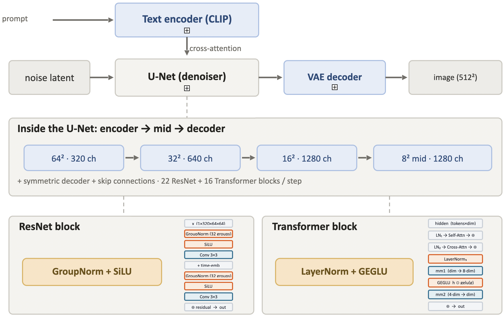
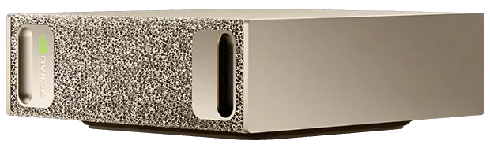
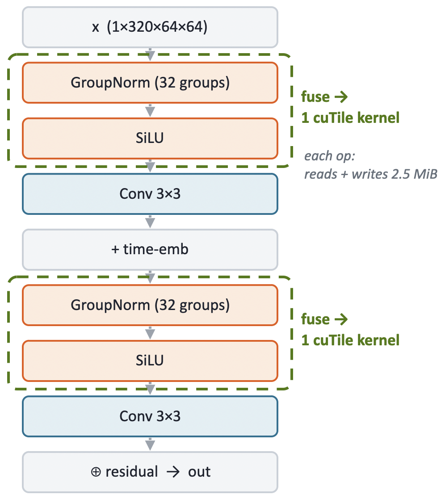
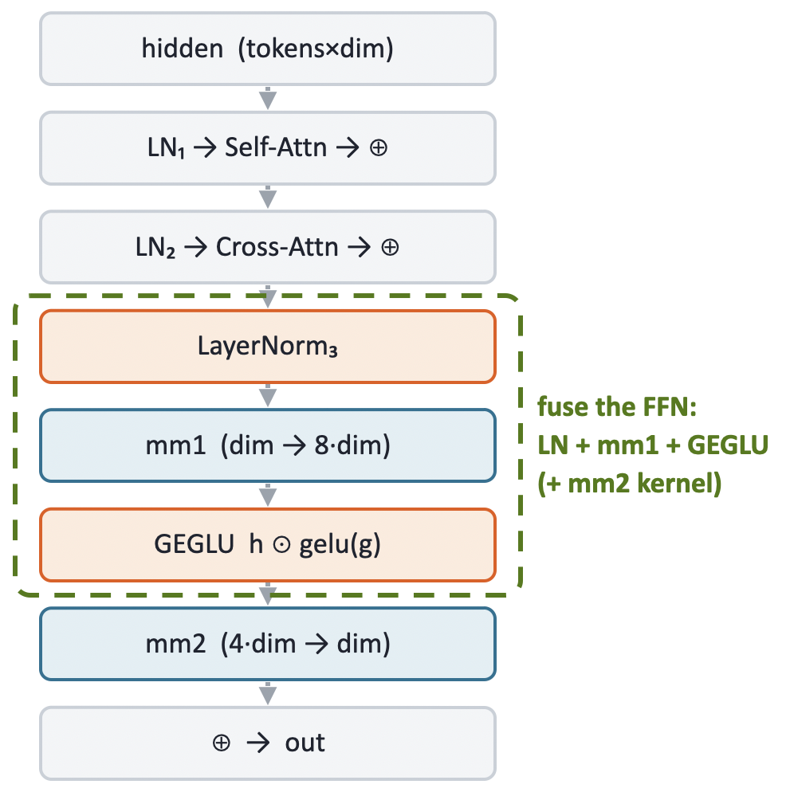
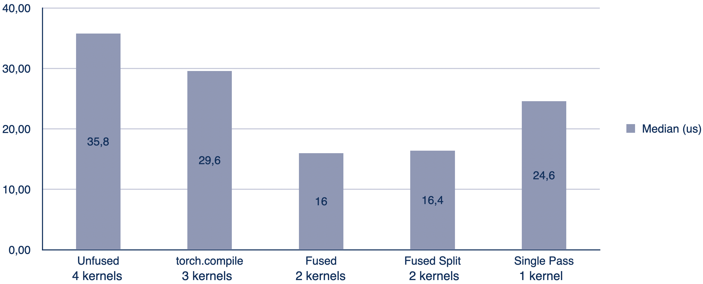
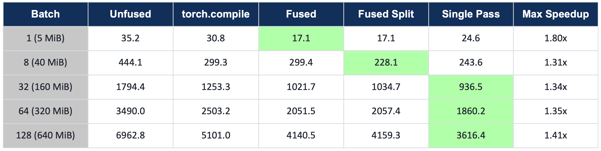
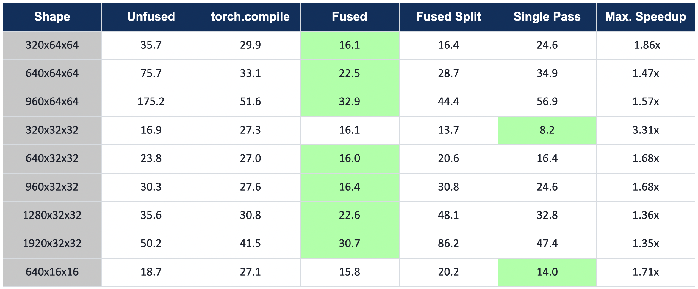
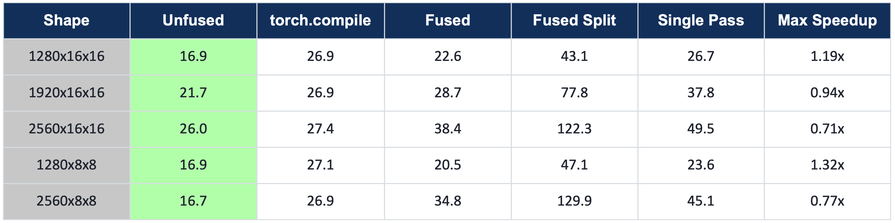

Project: cuTile for Local Diffusion
For our final project, we wanted to see how much of a difference custom GPU kernels can make on a real model. We took SD-Turbo, a local text-to-image diffusion model from Stability AI, and spent three weeks trying to cut its inference latency with cuTile. Some optimizations paid off, while others worsened performance, but we learned a lot about the model, the hardware, and the optimization process.
The Problem
A diffusion model generates images by iteratively denoising a random noise field, guided by a text prompt. Each denoising step runs a neural network whose blocks chain normalization, activation, and matrix multiplication in sequence. The obvious approach is to optimize each operation individually, but that ignores the memory traffic between them. Every kernel reads its input from memory, performs its computation, and writes its output back to memory. This data transfer is expensive and it is repeated for every operation in the chain. Fusing consecutive operations keeps intermediate results in registers or shared memory and eliminates memory round-trips.
In our project, we wanted to optimize a local diffusion model with cuTile by identifying and fusing memory-bound operations in the diffusion process. But more on that later. First, we need to understand the model architecture and the hardware.
The Model
The model is SD-Turbo, a distilled text-to-image model from Stability AI, available on HuggingFace.
It generates images in a single denoising step, which makes it a clean latency target, since there is no multi-step averaging to hide slow kernels.
The simplified architecture is shown below.
{kind=link}

A prompt is first encoded into a text embedding by the Text Encoder. The U-Net denoiser then uses that embedding to generate an image, running 22 ResNet blocks and 16 Transformer blocks on each denoising step. Finally, the VAE Decoder maps the denoised output to the final RGB image.
The Hardware
For the project we had access to a DGX Spark, a compact machine built for local AI workloads. It runs the NVIDIA GB10 Grace Blackwell Superchip with 128 GB of unified LPDDR5X memory at 273 GB/s, shared between the CPU and GPU. The GPU has 48 Streaming Multiprocessors (SMs) and 24 MiB of L2 cache.
{kind=link}

Our Milestones
We split the three-week project into six milestones:
Set up the environment and install required dependencies.
Inspect SD-Turbo, identify fusion candidates, reason about tiling, and build a roofline model.
Implement and optimize a fused GroupNorm + SiLU kernel.
Implement and optimize a fused LayerNorm + GEGLU FFN kernel.
Patch both kernels into SD-Turbo and verify end-to-end correctness.
Build a Gradio UI for running the optimized model on the DGX Spark.
Each milestone includes benchmarks against the eager PyTorch baseline and torch.compile, across batch sizes and the full set of real U-Net shapes.
Milestone 0: SD-Turbo Model
The SD-Turbo pipeline needs a few libraries beyond a base PyTorch install.
diffusers and transformers provide the model and text encoder; accelerate is a HuggingFace utility that suppresses dispatch warnings; torchvision handles image I/O.
pip install diffusers
pip install transformers
pip install accelerate
pip install torchvision
Milestone 1: Fusion Candidates
Before writing any kernels, we needed to find where fusion would actually pay off.
That meant inspecting the two main block types in the U-Net and building a roofline model to confirm which operations are worth targeting.
To see what torch.compile generates for each block, we used TORCH_LOGS=output_code.
We simply set it as an environment variable before compiling, which causes Inductor to print every kernel it emits to stdout.
The ResNet Block
Each ResNet block follows the same pattern: GroupNorm and SiLU, a 3x3 convolution that mixes information across neighboring pixels, a time-embedding step that injects the current noise level into the block, and then the same sequence again. Finally, the block’s input is added back to its output as a residual connection.
{kind=link}

Two fusion candidates stand out: the GroupNorm + SiLU pairs before and after the time-embedding. Running them as separate kernels means the full activation gets read and written twice per pair. At the top resolution (320 channels, 64x64 spatial), that activation is 2.5 MiB, so each unfused pair costs an unnecessary 5 MiB of memory traffic. Fusing both operations into a single kernel reduces that to one read and one write.
The activation sizes vary with U-Net depth. As the network goes deeper, spatial resolution halves and channel count doubles at each step: 320 channels at 64x64, 640 at 32x32, 1280 at 16x16 and 8x8. Fewer spatial locations, but each one carries a richer feature representation. All of these shapes are candidates for the same fusion.

GroupNorm and SiLU both sit close to the memory bandwidth ceiling and well below the compute roof, which means that they are bandwidth-bound. Fusing them reduces memory traffic without increasing compute requirements.
In the kernel log, eager PyTorch dispatches 4 separate kernels for the GN+SiLU block.
torch.compile already fuses the normalization and activation down to 3.
Our cuTile kernel brings that to 2 (a stats pass and an apply pass), or 1 with a single-pass design.
That is the bar we are working against.
The Transformer Block
The transformer block takes a sequence of tokens as input, where each token corresponds to one spatial location. In the model, tokens = height × width (the flattened spatial resolution from the previous ResNet layer) and dim = channels.
The block runs LayerNorm + self-attention and LayerNorm + cross-attention first. Both attention operations showed up as fused kernels in the log, leaving little room to improve.
{kind=link}

The feed-forward network at the end of the block is more promising. The kernel log revealed that Inductor emits the LayerNorm and the GEGLU gate as separate kernels, sandwiching two cuBLAS matmul calls:
triton_..._native_layer_norm # LayerNorm (own kernel)
extern_kernels.addmm # mm1 (cuBLAS)
triton_..._gelu_mul # GEGLU gate (own kernel)
extern_kernels.addmm # mm2 (cuBLAS)
Because cuBLAS handles the matmuls, Inductor cannot fold LayerNorm or GEGLU into them. The mm1 output is written to DRAM and read back by the gate kernel.
The path to fusion is clear: use LayerNorm as a first touch going into mm1 and GEGLU as a last touch coming out of mm1, keeping the intermediate in registers and avoiding the DRAM round-trip entirely.
The feed-forward expansion factor is 4, and GEGLU requires two projections (hidden and gate), so mm1 projects from [tokens, dim] to [tokens, 8*dim]. At the top shape (tokens=4096, dim=320), that intermediate is 4096 x 2560 x 2 bytes (fp16) = 20 MiB. Writing it to DRAM and reading it back costs 40 MiB per FFN call. The fused kernel avoids that entirely.
Milestone 2: Fused GroupNorm + SiLU
The first kernel to implement is the GroupNorm + SiLU fusion for the ResNet blocks. Before writing any cuTile code, it helps to understand what each operation computes and what data dependencies it creates.
GroupNorm and SiLU
GroupNorm normalizes each group of channels independently.
For each sample n and group g, it computes the mean and variance over all channels and spatial locations in the group, then normalizes and applies a learned affine transform:
Stability AI fixed the number of groups at 32 during training, so with 320 channels each group covers exactly 10 channels. The key constraint is that every element in the group must be read before any single element can be normalized, since mean and variance span the whole group. A two-pass design is the direct consequence: the first pass computes the statistics, the second applies them.
SiLU is simpler. Each output element depends only on the corresponding input:
There is no cross-element dependency, which makes it a natural last touch to fuse onto the normalization apply pass.
The Two-Pass Kernel
Pass 1: stats kernel – grid of N * G = 32 blocks, one per group.
Each block iterates over its channels_per_group = 10 channels, accumulating the sum and sum-of-squares over the full H*W spatial extent.
From these it derives the group mean and inverse standard deviation, then stores them to DRAM for pass 2.
@ct.kernel
def gn_mean_stddev_kernel(x, mean, std_dev,
channels_per_group: ConstInt,
height: ConstInt, width: ConstInt, eps):
num_groups = mean.shape[1]
bid = ct.bid(0)
group_idx = bid % num_groups
n = bid // num_groups
sum = ct.zeros((1,), dtype=torch.float32)
sum_sq = ct.zeros((1,), dtype=torch.float32)
for channel_in_group in range(channels_per_group):
channel_idx = group_idx * channels_per_group + channel_in_group
flat = ct.reshape(ct.load(x, index=(n, channel_idx, 0, 0),
shape=(1, 1, height, width)).astype(torch.float32),
(height * width,))
sum = sum + ct.sum(flat, axis=0)
sum_sq = sum_sq + ct.sum(flat * flat, axis=0)
count = channels_per_group * height * width
group_mean = sum / count
group_std_dev = ct.rsqrt(sum_sq / count - group_mean * group_mean + eps)
ct.store(mean, index=(n, group_idx), tile=ct.reshape(group_mean, (1, 1)))
ct.store(std_dev, index=(n, group_idx), tile=ct.reshape(group_std_dev, (1, 1)))
Pass 2: apply kernel – grid of N * C = 320 blocks, one per channel.
Each block loads the mean and inverse std for its group, applies normalization and the learned affine transform, then fuses SiLU as a final elementwise step. A grid of 320 blocks fully covers the 48 SMs.
@ct.kernel
def gn_silu_kernel(x, out, weight, bias, mean, std_dev,
channels_per_group: ConstInt,
height: ConstInt, width: ConstInt):
bid = ct.bid(0)
channel_idx = bid % x.shape[1]
sample_idx = bid // x.shape[1]
group_idx = channel_idx // channels_per_group
mean_s = ct.reshape(ct.load(mean, index=(sample_idx, group_idx), shape=(1, 1)), (1,))
inv_std_s = ct.reshape(ct.load(std_dev, index=(sample_idx, group_idx), shape=(1, 1)), (1,))
weight_s = ct.load(weight, index=(channel_idx,), shape=(1,)).astype(torch.float32)
bias_s = ct.load(bias, index=(channel_idx,), shape=(1,)).astype(torch.float32)
x_fp32 = ct.reshape(ct.load(x, index=(sample_idx, channel_idx, 0, 0),
shape=(1, 1, height, width)).astype(torch.float32),
(height * width,))
normed = (x_fp32 - mean_s) * inv_std_s
affine = normed * weight_s + bias_s
silu = affine * (1.0 / (1.0 + ct.exp(-affine)))
ct.store(out, index=(sample_idx, channel_idx, 0, 0),
tile=ct.reshape(silu.astype(out.dtype), (1, 1, height, width)))
The launch function allocates small intermediate buffers for the stats and fires both grids:
grid1 = (N * num_groups, 1, 1) # 32 blocks -- one per group
grid2 = (N * C, 1, 1) # 320 blocks -- one per channel
Alternative Approaches
We tried two other designs before settling on the two-pass kernel.
Split-reduction variant
The stats kernel launches only 32 blocks. With 48 SMs on the DGX Spark, 16 stay idle, which is a waste of parallelism. To fix this, we raised the stats grid to 320 blocks (one per channel) to compute partial sums per channel, and recombine them into group statistics inside the apply pass.
However, profiling disproved the hypothesis.
Raising the block count from 32 to 320 left memory throughput unchanged (6.73% -> 6.70%) and occupancy nearly flat (9.3% -> 11.5%).
The split apply pass even ran slower (19.2 us -> 23.4 us), because each apply block now has to load and sum 10 per-channel partial sums before it can normalize anything.
The clearest signal came from torch.compile itself: its apply kernel runs at 94.9% occupancy and still reaches only 15.7% memory throughput.
Therefore, the ceiling is not occupancy, but the problem size. A single batch-1 GroupNorm (2.5 MiB) does not supply enough parallel work to saturate the GPU.
Single-pass variant
The two-pass design has two costs: a kernel launch overhead for each pass, and a DRAM round-trip for the mean/inv_std buffers between them. The single-pass kernel removes both: one launch, one block per group, statistics computed in registers and immediately reused to normalize all channels in the same block.
The trade-off is that x must be read twice, once to compute the statistics and once to normalize, because the full group (40,960 elements at the top shape) is too large to keep in registers across both loops.
We hoped the second read would mostly be served from L2 cache, since the stats loop had just touched the same data.
Benchmarks
Comparing all variants against eager and torch.compile on a single (1, 320, 64, 64) block (all times in microseconds):
{kind=link}

Both cuTile and torch.compile sit at low memory throughput at batch 1. At 2.5 MiB the problem is latency-bound, not bandwidth-bound.
The two-pass kernel reaches a 1.85x speedup over torch.compile; the win comes from launch overhead, not kernel efficiency.
Single-pass still beats torch.compile and unfused at batch 1, but sits behind the two-pass and split variants. Its grid of only 32 blocks leaves 16 of the 48 SMs idle, so the saved launch overhead is partially eaten by lower parallelism.
Sweeping the batch size makes the memory hierarchy directly visible (all times in microseconds).
Each image needs 5 MiB of working set (x + out), so the set crosses the 24 MiB L2 cache between B=1 (5 MiB, L2-resident) and B=8 (40 MiB, spills to DRAM):
{kind=link}

At B=1, the two-pass (Fused) kernel leads. Its 320 apply blocks fully cover the 48 SMs and, with only 2.5 MiB to process, launch overhead is the dominant cost.
At B=8, Fused-Split takes over as the working set spills to DRAM and the split variant’s higher block count amortizes the cost better.
From B=32 onward, the single-pass kernel takes over.
The primary driver is intra-kernel cache reuse. Each block runs the stats loop and the apply loop in sequence, so the apply reads hit the L2 cache just primed by the stats pass rather than going back to DRAM.
The two-pass variant offers no such locality. Here the stats and apply kernels are separate launches with a global synchronization between them, so the apply kernel always reads x fresh from DRAM.
The measurements agree. At B=128, the theoretical DRAM bandwidth limit is roughly 3,690 µs (3 passes over 128 × 2.5 MiB at 273 GB/s); two-pass measures 4,140 µs (about 12% above the limit, i.e. ~243 GB/s effective), while single-pass measures 3,616 µs, below the theoretical limit, which is only possible if the second read of x is partially served from L2.
The single-pass grid grows as batch * 32 blocks, keeping the SMs well occupied, with one fewer kernel launch on top.
Across all batch sizes, at least one cuTile variant consistently outperforms torch.compile, which dispatches more kernels and therefore pays more launch overhead.
The DRAM-bound plateau confirms the roofline prediction: reading x twice and writing out once costs
\(3 \times 2.5\,\text{MiB} / 273\,\text{GB/s} \approx 28.8\,\mu s\) per image.
Shape coverage and the profitability gate
The U-Net has 44 GroupNorm calls across 14 distinct shapes. Most shapes fall well within what the kernel handles efficiently:
{kind=link}

On the remaining high-channel, tiny-spatial shapes, the fusion advantage disappears. The activations are small enough to fit entirely in L2 cache, so the memory traffic savings from fusion are negligible. The culprit is work-per-block granularity. The apply kernel dispatches one block per channel, so at shapes like 2560×8×8 each block handles only 64 spatial elements, far too little to amortize per-block scheduling overhead. Notably, the single-pass variant (one kernel launch) is slower than the two-pass variant (two launches), and both are slower than plain eager (four launches), the exact opposite of what kernel-launch count would predict, confirming that launch count is not the bottleneck. PyTorch applies the normalization as a single flat elementwise pass over the whole tensor (a fused TensorIterator kernel), so it stays fully occupied regardless of per-channel spatial size, and the cuTile kernel ends up slower than plain eager:
{kind=link}

To avoid regressing those shapes, we added a _PROFITABLE_GN_SHAPES gate that activates the fused path only where it beats eager and falls back to PyTorch everywhere else.
The gate ensures the end-to-end patch is a net improvement and no shape is left slower than baseline.
The batch-1 wins are purely launch-overhead gains; torch.compile(mode="reduce-overhead") with CUDA graphs would erase them.
There is no kernel-level headroom left; further speed-up requires graph-level optimization.